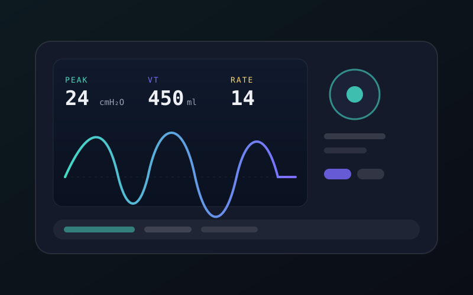
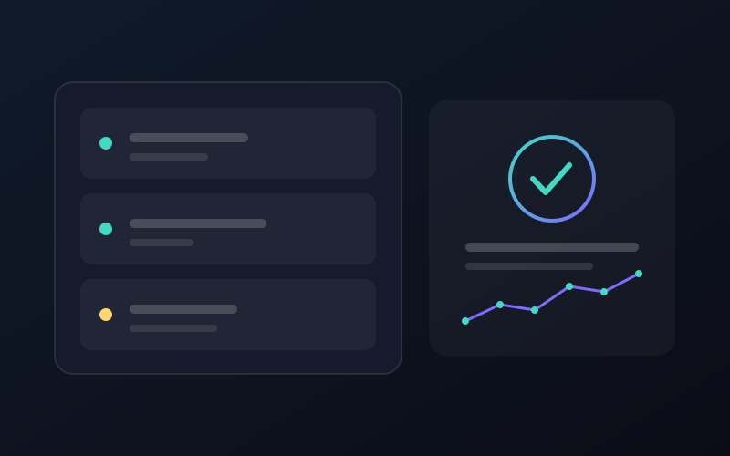

Рассматриваю предложения
Привет, я Павел
держу медицинскую технику
в рабочем строю
Инженер по медицинскому оборудованию с 7‑летним опытом. Обслуживаю и ремонтирую диагностическую и лечебную технику, провожу приёмо‑сдаточные испытания и метрологический контроль.
- 7+лет опыта
- 400+единиц техники
- 25медучреждений
01 — О себе
Коротко о главном
Меня зовут Павел Новосадов, я инженер по медицинскому оборудованию. Работаю с парком диагностической и лечебной техники в клиниках и лабораториях: от ввода в эксплуатацию до планового обслуживания и ремонта.
Разбираюсь в схемотехнике, пневматике и гидравлике медицинских систем, работаю с сервисной документацией производителей. Провожу измерения электрической безопасности и контролирую соответствие оборудования требованиям ТР ЕАЭС 040/2016 и ГОСТ ISO 13485.
В работе ценю предсказуемость: диагностика по фактам, понятные отчёты, честные сроки. Чем меньше техника простаивает — тем лучше для пациентов.
Обсудить сотрудничество- Локация
- Минск · выезды по Беларуси
- Опыт
- 7 лет в сервисе медтехники
- Специализация
- Диагностическое и лечебное оборудование
- Языки
- Русский · English (B2)
02 — Навыки
Чем я работаю
Метрология и безопасность
Нормы и документация
03 — Опыт
Из практики

Парк ИВЛ: плановое ТО
Взял на обслуживание 60 аппаратов ИВЛ в двух клиниках: регламентные работы, замена расходных материалов, история по каждой единице. Снизил внеплановые простои на 40%.

Лаборатория: входной контроль
Проверил и ввёл в эксплуатацию 35 единиц лабораторного оборудования, оформил паспорта и графики поверки, наладил учёт. Аккредитация лаборатории прошла без замечаний по технической части.
04 — Контакты
Обсудим обслуживание техники?
Рассматриваю предложения в клиниках и сервисных компаниях. Расскажите, что за оборудование и что с ним происходит — отвечу в течение дня.